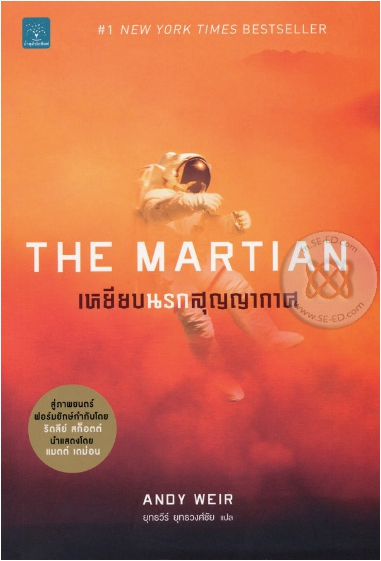

"ผมติดอยู่บนดาวอังคารเพียงลำพัง" ...นาซาสั่งยกเลิกภารกิจสำรวจพื้นผิวดาวอังคาร หลังจากพายุทรายลูกมหึมาพัดถล่ม นักบินอวกาศคนหนึ่งกลับหายสาบสูญไประหว่างการอพยพ ทุกคนบนโลกคิดว่านักบินคนนั้นตายไปแล้ว แต่เขายังมีชีวิตอยู่และเขาคนนั้นก็คือ...ผมเอง ถึงผมจะยังไม่ตาย แต่ก็เหมือนตกอยู่ในนรกทั้งเป็น ระบบสื่อสารถูกตัดขาด ไม่มีทางติดต่อกับโลก ด้วยสภาพที่เป็นอยู่ ผมไม่รู้ว่าจะรอดไปได้อีกสักกี่วัน ถ้าเครื่องผลิตออกซิเจนเสีย ผมจะขาดอากาศหายใจ ถ้าเครื่องกรองน้ำทรยศ ผมจะช็อกตายเพราะขาดน้ำ ถ้ายานมีรอยรั่วแม้แต่จุดเดียว ร่างของผมคงระเบิดเป็นเสี่ยง หรือต่อให้สิ่งที่พูดมาทั้งหมดไม่เกิดขึ้น ผมก็ต้องอดอาหารตายอยู่ดี เว้นเสียแต่ว่า...ผมจะหาทางติดต่อโลกให้ได้ และใช้ไหวพริบทั้งหมดที่มีเอาตัวรอด จนกว่าความช่วยเหลือที่อยู่ห่างออกไป 140 ล้านไมล์จะมาถึง!
